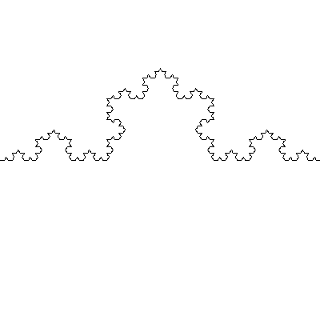
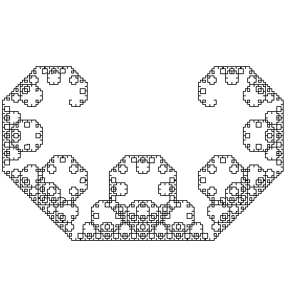
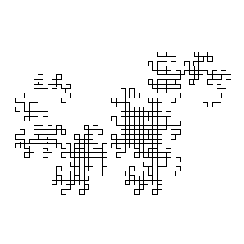

SICP の Picture Language を使って有名どころのフラクタル図形を書いてみました。
任意角度の回転手続 rotate と並行移動の手続 shift、
原点からの拡大/縮小の scale, さらに比率を x 軸, y 軸それぞれに
与えることのできる scale2 を作ります。
(define (rotate painter t)
(let ((s (sin t))
(c (cos t)))
(transform-painter painter
(make-vect 0.0 0.0)
(make-vect c s)
(make-vect (- s) c))))
(define (shift painter s)
(transform-painter painter
s
(add-vect (make-vect 1.0 0.0) s)
(add-vect (make-vect 0.0 1.0) s)))
(define (scale painter r)
(transform-painter painter
(make-vect 0.0 0.0)
(make-vect r 0.0)
(make-vect 0.0 r )))
(define (scale2 painter x y)
(transform-painter painter
(make-vect 0.0 0.0)
(make-vect x 0.0)
(make-vect 0.0 y )))
(/ 1 (sqrt 2)) と (/ 1 (sqrt 3))
はよく出てくるので、あらかじめ適当な名前をつけておきます.
(define ir2 (/ 1 (sqrt 2))) (define ir3 (/ 1 (sqrt 3))) (define pi/6 (/ pi 6))
もとの SICP では最初に与えられた frame からはみ出さないような変換しかなかったけど,
これらの変換はそうとは限りません.
できあがった図形がきちんと画板に収まるように, 最後に shift と
scale で調整します.
(define d10 (dragon simple-segment 10))
(define k08 (koch simple-segment 8))
(define l12 (levy simple-segment 12))
(draw-painter (shift (scale d10 0.6) (make-vect 0.25 0.60))
400 400 "dragon10.png")
(draw-painter (shift k08 (make-vect 0.00 0.50))
400 400 "koch08.png")
(draw-painter (shift (scale l12 0.5) (make-vect 0.25 0.65))
400 400 "levy12.png")
draw-painter は描画する画板(ウィンドウやビットマップなど) の情報と
それに合わせた枠(frame)を painter に渡して実際に描画を行ないます.
それではお絵書きをお楽しみ下さい.
|  |
(define (koch painter n)
(if (= n 0)
painter
(let ((f1 (scale (rotate (scale2 painter 1 -1) pi/6) ir3))
(f2 (shift (scale (rotate (shift (scale2 painter 1 -1)
(make-vect -1.0 0.0))
(- pi/6))
ir3)
(make-vect 1.0 0.0))))
(koch (compose-painter f1 f2) (- n 1)))))
|
|  |
(define (levy painter n)
(if (= n 0)
painter
(let ((f1 (scale (rotate painter (- pi/4)) ir2))
(f2 (shift (scale (rotate (shift painter
(make-vect -1.0 0.0))
pi/4)
ir2)
(make-vect 1.0 0.0))))
(levy (compose-painter f1 f2) (- n 1)))))
|
|  |
(define (dragon painter n)
(if (= n 0)
painter
(let ((f1 (scale (rotate painter (- pi/4)) ir2))
(f2 (shift (scale (rotate (scale2 painter -1 -1) pi/4) ir2)
(make-vect 1.0 0.0))))
(dragon (compose-painter f1 f2) (- n 1)))))
|